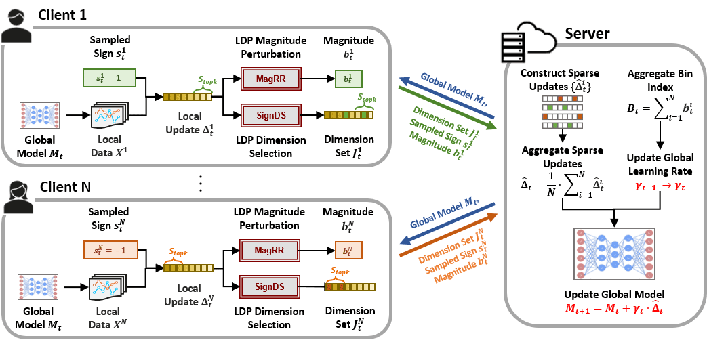
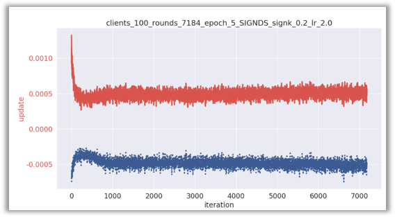
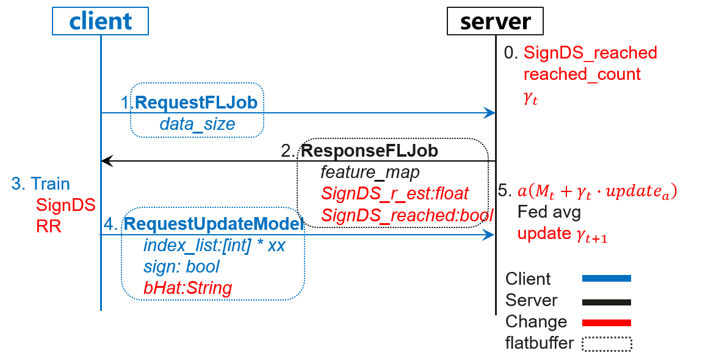

横向联邦-局部差分隐私SignDS训练¶

隐私保护背景¶
联邦学习通过让参与方只上传本地训练后的新模型或更新模型的update信息，实现了client用户不上传原始数据集就能参与全局模型训练的目的，打通了数据孤岛。这种普通场景的联邦学习对应MindSpore联邦学习框架中的默认方案，启动server时，encrypt_type开关默认为not_encrypt，联邦学习教程中的安装部署与应用实践都默认使用这种方式，是没有任何加密扰动等保护隐私处理的普通联邦求均方案，为方便描述，下文以not_encrypt来特指这种默认方案。
这种联邦学习方案并不是毫无隐私泄漏的，使用上述not_encrypt方案进行训练，服务端Server收到客户端Client上传的本地训练模型，仍可通过一些攻击方法[1]重构用户训练数据，从而泄露用户隐私，所以not_encrypt方案需要进一步增加用户隐私保护机制。
联邦学习中客户端Client每轮接收的全局模型oldModel都是由服务端Server下发的，不涉及用户隐私问题。但各客户端Client本地训练若干epoch后得到的本地模型newModel拟合了其本地隐私数据，所以隐私保护重点是二者的权重差值newModel-oldModel=update。
MindSpore Federated框架中已实现的DP_ENCRYPT差分噪声方案通过向update迭加高斯随机噪声进行扰动，实现隐私保护。但随着模型维度增大，update范数增大会使噪声增大，从而需要较多的客户端Client参与同一轮聚合，以中和噪声影响，否则模型收敛性和精度会降低。如果设置的噪声过小，虽然收敛性和精度与not_encrypt方案性能接近，但隐私保护力度不够。同时每个客户端Client都需要发送扰动后的模型，随着模型增大，通信开销也会随之增大。我们期望手机为代表的客户端Client，以尽可能少的通信开销，即可实现全局模型的收敛。
算法流程介绍¶
SignDS[2]是Sign Dimension Select的缩写，处理对象是客户端Client的update。准备工作：把update的每一层Tensor拉平展开成一维向量，连接在一起，拼接向量维度数量记为\(d\)。
一句话概括算法：每个参与方仅上传重要维度的信息，信息包括它们的梯度方向和隐私保护的步长。分别对应下图中的SignDS和MagRR（Magnitude Random Response）模块。

下面举例来说明：现有3个客户端Client1，2，3，其update拉平展开后为\(d=8\)维向量，服务端Server计算这3个客户端Client的avg，并用该值更新全局模型，即完成一轮联邦学习。
| Client | d_1 | d_2 | d_3 | d_4 | d_5 | d_6 | d_7 | d_8 |
|---|---|---|---|---|---|---|---|---|
| 1 | 0.4 | 0.1 | -0.2 | 0.3 | 0.5 | 0.1 | -0.2 | -0.3 |
| 2 | 0.5 | 0.2 | 0 | 0.1 | 0.3 | 0.2 | -0.1 | -0.2 |
| 3 | 0.3 | 0.1 | -0.1 | 0.5 | 0.2 | 0.3 | 0 | 0.1 |
| avg | 0.4 | 0.13 | -0.1 | 0.3 | 0.33 | 0.2 | -0.1 | -0.13 |
SignDS¶
应选择重要性较高的维度，重要性衡量标准是取值的大小，需要对update进行排序。update取值正负代表不同的更新方向，故每轮联邦学习中，客户端Client的sign值各有0.5的概率取1或-1。如果sign=1，则将最大的\(k\)个update维度记为topk集合，剩余的记为non-topk集合；如果sign=-1，则将最小的\(k\)个记为topk集合。
如果服务端Server指定总共选择的维度数量h，客户端Client会直接使用该值，否则各客户端Client会本地计算出最优的输出维度h。
随后SignDS算法会输出应从topk集合和non-topk集合中选择的维度数量（记为\(v\)），如下表中示例，两个集合总共挑选维度h=3。
客户端Client按照SignDS算法输出的维度数量，均匀随机挑选维度，将维度序号和sign值发送至服务端Server，维度序号如果按照先从topk挑选，再从non-topk挑选的顺序输出，则需要对维度序号列表index进行洗牌打乱操作，下表为该算法各客户端Client最终传输至服务端Server的部分信息：
| Client | index | sign |
|---|---|---|
| 1 | 1,5,8 | 1 |
| 2 | 2,3,4 | -1 |
| 3 | 3,6,7 | 1 |
MagRR¶
服务端Server收到客户端发来的维度方向，但不清楚在该方向要更新的步长是多少。通常来讲，在训练初期，步长往往很大，随着训练逐渐收敛，步长缩小。步长变化的大致趋势如下图所示：

服务端Server希望估计一个针对实际步长\(r\)的动态范围\([0,2∗r_{est}]\)，进而计算全局学习率\(lr_{global}=2∗r_{est}*num_{clients}\)。
\(r\)的调整采用类似二分法思路。具体流程如下：
训练开始前，服务端初始化一个较小的\(r_{est}\)(不会对模型收敛方向造成过大影响）；
每轮本地训练后，参与方计算真实幅值\(r\)（topk维度的均值），并根据当前云侧下发的\(r_{est}\)将\(r\)以一定规则转换为\(b\)；
参与方对\(b\)进行本地差分Binary Randomized Response(BRR)扰动，并将结果上传。
整个训练过程分为两个阶段，即快增长阶段和收缩阶段。参与方在两个阶段进行\(r \rightarrow b\)转换和服务端更新\(r_{est}\)的规则略有不同：
快增长阶段，选取一个较小的\(r_{est}\)，如\(e^{−5}\)。此时，需要以一定倍数扩大\(r_{est}\)。 因此定义：
\[\begin{split} b = \begin{cases} 0 & r \in [2*r_{est}, \infty] \\ 1 & r \in [0,2*r_{est})] \end{cases} \end{split}\]服务端聚合所有端侧随机响应结果进行频率统计，计算众数\(B\)， 若\(B=0\)，则认为目前\(r_{est}\)未到达𝑟的范围，需继续增大\(r_{est}\)； 若\(B=1\)，则认为\(r_{est}\)已到达𝑟的范围，保持\(r_{est}\)不变。
收缩阶段，需要根据\(r\)的变化微调\(r_{est}\)。因此定义：
\[\begin{split} b = \begin{cases} 0 & r \in [r_{est}, \infty] \\ 1 & r \in [0,r_{est})] \end{cases} \end{split}\]计算\(B\)，若\(B=0\) ，则认为目前\(r_{est}\)和\(r\)较为接近，保持\(r_{est}\)不变； 若\(B=1\)，则认为\(r\)普遍小于\(r_{est}\)，则将\(r_{est}\)减半。
服务端Server根据各客户端Client上传的维度序号，sign值和\(r_{est}\)，构建带隐私保护的update，对所有update进行聚合平均并更新当前oldModel即完成一轮联邦学习。下表展示了\(2∗r_{est}*num_{clients}=1\)时的聚合情况。
| Client | d_1 | d_2 | d_3 | d_4 | d_5 | d_6 | d_7 | d_8 |
|---|---|---|---|---|---|---|---|---|
| 1 | 1 | 0 | 0 | 0 | 1 | 0 | 0 | 1 |
| 2 | 0 | -1 | -1 | -1 | 0 | 0 | 0 | 0 |
| 3 | 0 | 0 | 1 | 0 | 0 | 1 | 1 | 0 |
| avg | 1/3 | -1/3 | 0 | -1/3 | 1/3 | 1/3 | 1/3 | 1/3 |
SignDS方案使端侧client只上传算法输出的int类型维度序号列表，一个布尔类型的随机Sign值和对估计值的反馈结果到云侧，相比普通场景中上传数万float级别的完整模型权重或梯度，通讯开销显著降低。从实际重构攻击的角度来看，云侧仅获得维度序号、代表梯度更新方向的一个Sign值和隐私保护的步长估计反馈值，攻击更加难以实现。整体方案的数据流字段如下图所示：

隐私保护证明¶
差分隐私噪声方案通过加噪的方式，让攻击者无法确定原始信息，从而实现隐私保护；而差分隐私SignDS方案只激活部分维度，且用sign值代替原始值，很大程度上保护了用户隐私。进一步的，利用差分隐私指数机制让攻击者无法确认激活的维度是否是重要（来自topk集合），且无法确认输出维度中来自topk的维度数量是否超过给定阈值。
基于指数机制的维度选择机制¶
对于每个客户端Client的任意两个update \(\Delta\) 和 \(\Delta'\) ，其topk维度集合分别是 \(S_{topk}\) ， \({S'}_{topk}\) ，该算法任意可能的输出维度集合是 \({J}\in {\mathcal{J}}\) ，记 \(\nu=|{S}_{topk}\cap {J}|\) ， \(\nu'=|{S'}_{topk}\cap {J}|\) 是 \({J}\) 和topk 集合交集的数量，算法使得以下不等式成立：
证明该算法满足局部差分隐私。
局部差分隐私-随机响应机制¶
参与方收到服务端下发的估计值，在本地训练完成后，计算真实update的topk维度权重均值，根据magRR策略输出0或1，我们认为0或1仍然带有权重均值范围信息，则需要进一步保护。
随机响应机制的输入为待保护数据（\(b\in \{0,1\}\)）和隐私参数\(\epsilon\)，按照一定的概率对数据进行翻转，输出\(\hat{b} \in \{0,1\}\)，规则如下：
其中\(P=\frac{e^\epsilon}{1+e^\epsilon}\)。
基于随机响应机制的频率统计¶
通过随机响应的方式使敌手很难区分真实数据和扰动数据，来达到以假乱真的效果，但也会影响云侧统计任务的可用性。服务端可通过降噪的方式近似的真实统计频率值，但很难逆向推断出用户的真实输入。记\(N\)为一轮参与方总数，\(N^T\)为原始为1的总数，\(N^C\)为服务端收集到的1的总数，则有：
准备工作¶
若要使用该算法，首先需要成功完成任一端云联邦场景的训练聚合过程，实现一个端云联邦的图像分类应用(x86)详细介绍了数据集、网络模型等准备工作，以及模拟启动多客户端参与联邦学习的流程。
算法开启脚本¶
本地差分隐私SignDS训练目前只支持端云联邦学习场景。开启方式需要在启动云侧服务时，在yaml文件中更改下列参数配置，云侧完整启动脚本可参考云侧部署，这里给出启动该算法的相关参数配置。以LeNet任务为例，yaml相关配置如下：
encrypt:
encrypt_type: SIGNDS
...
signds:
sign_k: 0.01
sign_eps: 100
sign_thr_ratio: 0.6
sign_global_lr: 0.1
sign_dim_out: 0
具体样例可参考图像分类应用 云侧代码实现给出了各个参数的定义域，若不在定义域内的，Server会报错提示定义域。以下参数改动的前提是保持其余4个参数不变：
sign_k：(0,0.25]，k*inputDim>50. default=0.01，inputDim是模型或update的拉平长度，若不满足，端侧警告。排序update，占比前k（%）的组成topk集合。减少k，则意味着要从更重要的维度中以较大概率挑选，输出的维度会减少，但维度更重要，无法确定收敛性的变化，用户需观察模型update稀疏度来确定该值，当比较稀疏时（update有很多0），则应取小一点。sign_eps：(0,100]，default=100。隐私保护预算，数序符号为\(\epsilon\)，简写为eps。eps减少，挑选不重要的维度概率会增大，隐私保护力度增强，输出维度减少，占比不变，精度降低。sign_thr_ratio：[0.5,1]，default=0.6。激活的维度中来自topk的维度占比阈值下界。增大会减少输出维度，但输出维度中来自topk的占比会增加，当过度增大该值，要求输出中更多的来自topk，为了满足要求只能减少总的输出维度，当client用户数量不够多时，精度下降。sign_global_lr：(0,)，default=1。该值乘上sign来代替update，直接影响收敛快慢与精度，适度增大该值会提高收敛速度，但有可能让模型震荡，梯度爆炸。如果每个client用户本地跑更多的epoch，且增大本地训练使用的学习率，那么需要相应提高该值；如果参与聚合的client用户数目增多，那么也需要提高该值，因为重构时需要把该值聚合再除以用户数目，只有增大该值，结果才保持不变。若参与聚合的新版本（r0.2）参与方占比不足5%，则MagRR算法的\(lr_{global}\)直接调整为该入参。sign_dim_out：[0,50]，default=0。若给出非0值，client端直接使用该值，增大该值输出的维度增多，但来自topk的维度占比会减少；若为0，client用户要计算出最优的输出参数。eps不够大时，若增大该值，则会输出很多non-topk的不重要维度导致影响模型收敛，精度下降；当eps足够大时，增大该值会让更多的用户重要的维度信息离开本地，精度提升。
LeNet实验结果¶
使用3500_clients_bin其中的100个client数据集，联邦聚合200个iteration，每个client本地运行20个epoch，端侧本地训练使用学习率为0.01，SignDS相关参数为k=0.01,eps=100,ratio=0.6,lr=4,out=0，最终所有用户的准确率为66.5%，不加密的普通联邦场景为69%。不加密场景中，端侧训练结束上传到云侧的数据长度为266084，但SignDS上传的数据长度仅为656。
参考文献¶
[1] Ligeng Zhu, Zhijian Liu, and Song Han. Deep Leakage from Gradients. NeurIPS, 2019.
[2] Xue Jiang, Xuebing Zhou, and Jens Grossklags. “SignDS-FL: Local Differentially-Private Federated Learning with Sign-based Dimension Selection.” ACM Transactions on Intelligent Systems and Technology, 2022.